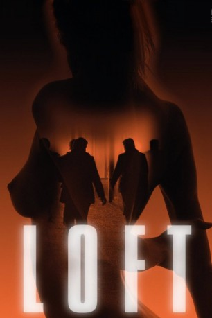
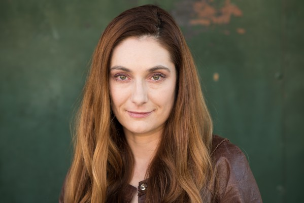
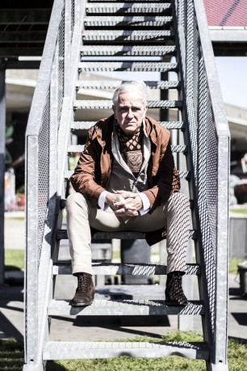

#2028 Loft - Tödliche Affären
 
 IMDB-Wertung: 7.3 / 10
IMDB-Wertung: 7.3 / 10  Metascore: 0
Metascore: 0 
Ursprünglich haben sich die fünf Freunde Luc, Chris, Vincent, Filip und Marnix ein Luxusloft angemietet, um dort unbehelligt von Frauen und Kindern heimlich heiße Nächte zu verbringen. Nun verunziert eine gefesselte Frauenleiche das Apartment und wenn sie die Polizei rufen, sind ihre Ehen ruiniert. Also versuchen sie selbst zu rekonstruieren, ob Selbstmord oder Mord vorliegt und wer für das Schlamassel verantwortlich ist. Denn außer ihnen hat niemand einen Schlüssel zur Wohnung. Die Lage wird brenzlig, als sich die befreundeten Verdächtigen beginnen, sich mit gegenseitigen Beschuldigungen zu attackieren...
Jahr: 2008
Dauer: 118 Minuten
FSK: 16
Land: Belgien Studio: Koch MediaTonspuren:
Untertitel:
Auflösung: 1080p (1920x816) Größe: 8069 MB
Genre: Thriller, Drama, Krimi, Liebe, Mystery
Regisseur: Erik Van Looy
Drehbuch: Bart De Pauw
Soundtrack: Wolfram de Marco
Darsteller:
- Koen De Bouw als Chris Van Outryve
 Filip Peeters als Vincent Stevens
Filip Peeters als Vincent Stevens Matthias Schoenaerts als Filip Willems
Matthias Schoenaerts als Filip Willems- Koen De Graeve als Marnix Laureys
- Veerle Baetens als Ann Marai
- Charlotte Vandermeersch als Vicky Willems
 Jan Decleir als Ludwig Tyberghein
Jan Decleir als Ludwig Tyberghein- Dirk Roofthooft als Mannelijke ondervrager
- Renée Fokker als (uncredited
-  Olga Wilhelmine als Violinist , uncredited
- Cela Yildiz als Businessman , uncredited
- Bruno Vanden Broucke als Luc Seynaeve
- Tine Reymer als Barbara Stevens
- An Miller als Ellen Van Outryve
- Wine Dierickx als Elsie Seynaeve
- Maaike Cafmeyer als Miriam Laureys
- Marie Vinck als Sarah Delporte
-  Gene Bervoets als Burgemeester Van Esbroeck
- Sara de Roo als Vrouwelijke ondervrager
 Laura Verlinden als Sharon
Laura Verlinden als Sharon- Ruth Beeckmans als Anja
- Barbara Dzikanowice als Hoertje
- Ina Geerts als Vrouw burgemeester
- Sophie Van Peel als Vrouw Tyberghein
- Olivier De Smet als Vriend Sharon
- Carl Van Baelen als Bruiloft genodigde / Bezoeker politiebureau
- Ben Mouling als Vriend Sharon
- Veronique Boubane als Zwart meisje
- Lindsay Bervoets als Vriendin Filip
- Tiffany Van den Brande als Vriendin Filip
- Pam Borgoo als Immovrouw
- Sara Giulini als Vriendin Tyberghein
- Tessa Van Winkel als Vrouw bar Düsseldorf
- Sylvie Kruppa als Vrouw bar Düsseldorf
- Els Talloen als Vriendin Sharon
- Imke Courtois als Vriendin Sharon
- Véronique Billon als Vriendin Sharon
- Marianne Bolle als Vriendin Sharon
- Nana Jans als Vriendin Sharon
- Adia Panteleeff als Vrouw toilet casino
- Britt Van Driessche als Vrouw toilet casino
- Bente De Graeve als Dochter Vincent Stevens
- Elise Regaert als Dochter Vincent Stevens
Datei: X:\3-Trilogie(G-M)\Loft\Loft - Tödliche Affären (2008, FSK16, 1920x816).mkv seit 25.09.2015
Festplatte: HD Collection-2(A-Z)-3(A-M)
 Alle Filme aus Gruppe '3-Trilogie(G-M)\Loft'
Alle Filme aus Gruppe '3-Trilogie(G-M)\Loft'